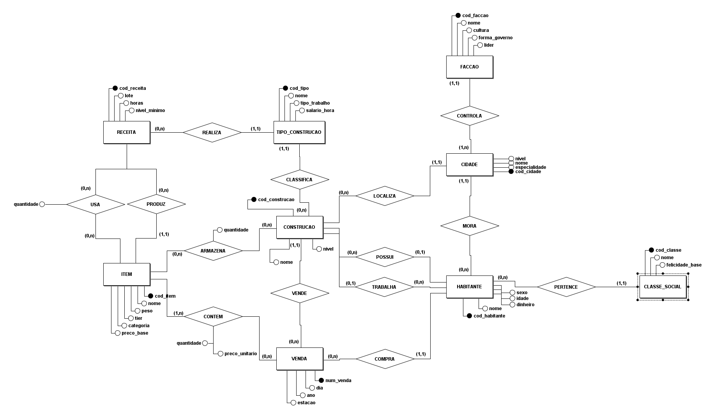

Banco de Dados · Trabalho final · Parte A
Proposta do sistema e modelo conceitual (DER)
Felipe Tonin · Prof. Wendel Góes · UTFPR Câmpus Apucarana · 2026/2
Um banco de dados para o mundo de um jogo 2D de gestão e RPG, em que a economia funciona de verdade.
Moram nas cidades e trabalham nas construções.
Produzem itens a partir de receitas.
Guarda os itens de cada construção.
Registram quem vendeu, quem comprou e por quanto.
9
entidades
14
relacionamentos
3
relacionamentos N:N com atributos próprios
6
facções e cerca de 2.000 habitantes no mundo
Os três N:N com atributos: USA, ARMAZENA e CONTEM.
Nome, cultura, forma de governo e líder.
Controla uma ou mais cidades
→
Nome, nível de 1 a 5 e especialidade.
Pertence a uma única facção
→
Nome, sexo, idade e dinheiro guardado.
Mora em uma única cidade
→
Nome e felicidade base dos membros.
Todo habitante tem uma classe
Facções: Guerreira, Arcana, Autoritária, Religiosa, Tecnocrata e Escravista. Classes: Escravo, Civil, Rico, Nobre e Realeza.
| Entidade | O que guarda |
|---|---|
| Tipo de construção | Nome, tipo de trabalho e salário por hora |
| Construção | Nome e nível; fica em uma cidade e é de um tipo |
| Receita | Tamanho do lote, horas de trabalho e nível mínimo |
| Item | Nome, categoria, tier de 0 a 3, peso e preço base |
Exemplo: receita do Pão
2 Grãos + 1 Água viram 4 Pães em 4 horas
Feita só no Cozinheiro. A quantidade de cada insumo fica no relacionamento USA.
Cada receita produz um único item e só pode ser feita em um tipo de construção.
Cada construção guarda vários itens, e o mesmo item pode estar em várias construções.
ARMAZENA guarda a quantidade
Uma construção vende para um habitante, em um dia, estação e ano do jogo.
CONTEM guarda quantidade e preço unitário
Perguntas que o banco responde
Quais oficinas vendem mais?
Quais habitantes estão sem trabalho?
Quais itens faltam em cada cidade?

| Regra do mundo | Relacionamento | Cardinalidade |
|---|---|---|
| Construção pública, como Mercado e Templo, não tem dono | POSSUI | (0,1) |
| Criança ou desempregado não trabalha em nenhuma construção | TRABALHA | (0,1) |
| Uma classe social pode ficar sem nenhum habitante | PERTENCE | (0,n) |
| Receita de coleta não usa nenhum insumo | USA | (0,n) |
| Toda facção controla pelo menos uma cidade | CONTROLA | (1,n) |
| Toda venda contém pelo menos um item | CONTEM | (1,n) |
O mínimo 0 marca o que é opcional; o mínimo 1 marca o que é obrigatório.
Próxima etapa
1
Converter o DER em 12 tabelas: as 9 entidades e mais 3 para os N:N.
2
Os 1:N viram chaves estrangeiras; dono e local de trabalho aceitam nulo.
3
Criar as tabelas no MySQL, com tipos de dados e restrições.
4
Povoar o banco e escrever as consultas que respondem às perguntas.
Tabelas dos N:N: insumos da receita (USA), estoque (ARMAZENA) e itens da venda (CONTEM).